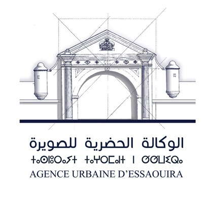

<div class="section">
    <div class="container">
        <div class="content-section">
            <div class="title">
                <h1>Présentation de Notre Agence</h1>
            </div>
            <div class="content">
                <h2>L’Agence Urbaine d’Essaouira</h2>
                <p>
                    L’Agence Urbaine d’Essaouira a été créée le 19 octobre 2006, en vertu du Décret n° 2.06.166. 
                    C’est un établissement public doté de la personnalité morale et de l’autonomie financière, 
                    sous la tutelle du Ministère de l’Aménagement du Territoire, de l’Urbanisme, de l’Habitat 
                    et de la Politique de la Ville.
                </p>
                <h3>Missions</h3>
            <p>
                L’arrêté n°2-3572 du 08 juillet 2005 portant organisation financière et comptable des 
                Agences Urbaines et le décret n°2-06-166 du 26 ramadan 1427 (19 octobre 2006) fixent 
                les missions de l’Agence Urbaine comme suit :
            </p>
            <ul>
                <li>Réaliser les études nécessaires à l’établissement des schémas directeurs d’aménagement urbain.</li>
                <li>Programmer les projets d’aménagement en lien avec les objectifs des schémas directeurs.</li>
                <li>Préparer les projets de documents d’urbanisme réglementaire.</li>
                <li>Donner un avis conforme sur tous les projets de lotissements et constructions.</li>
                </ul>
                <div class="button">
                    <a href="">Read More</a>
                </div>
            </div>
        </div>
        <div class="image-section">
            
        </div>
    </div>
</div>